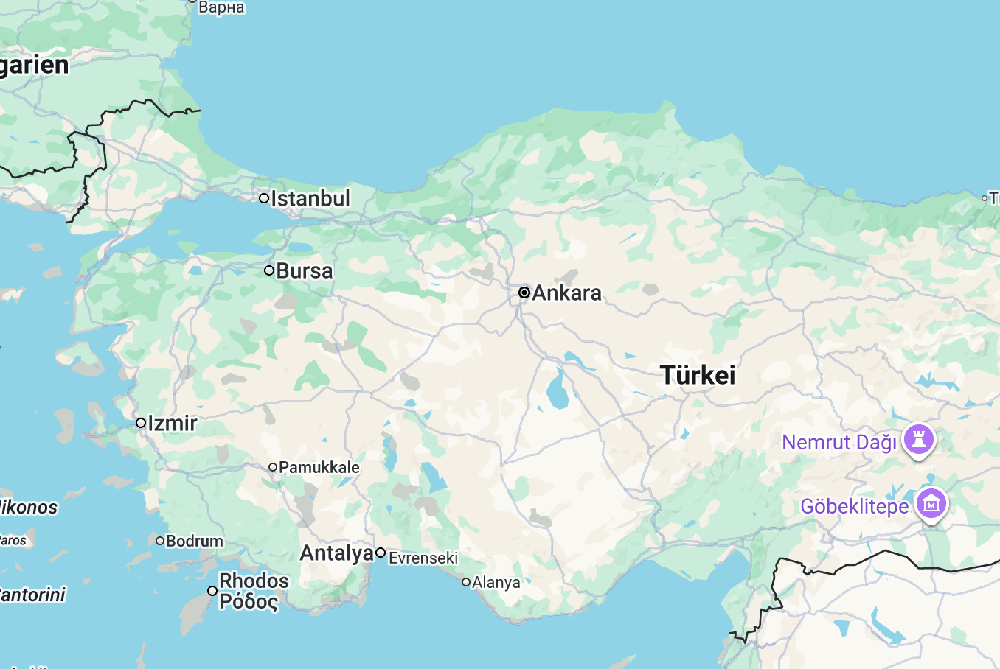
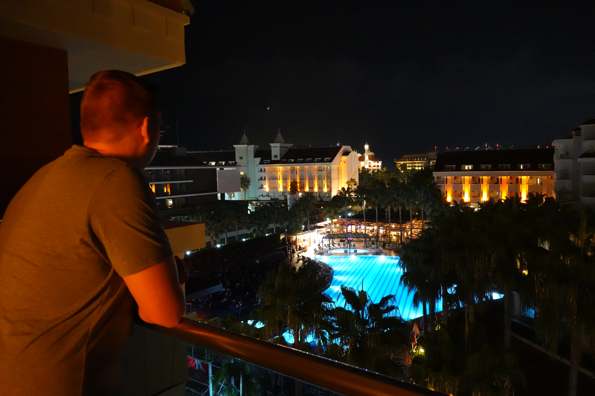
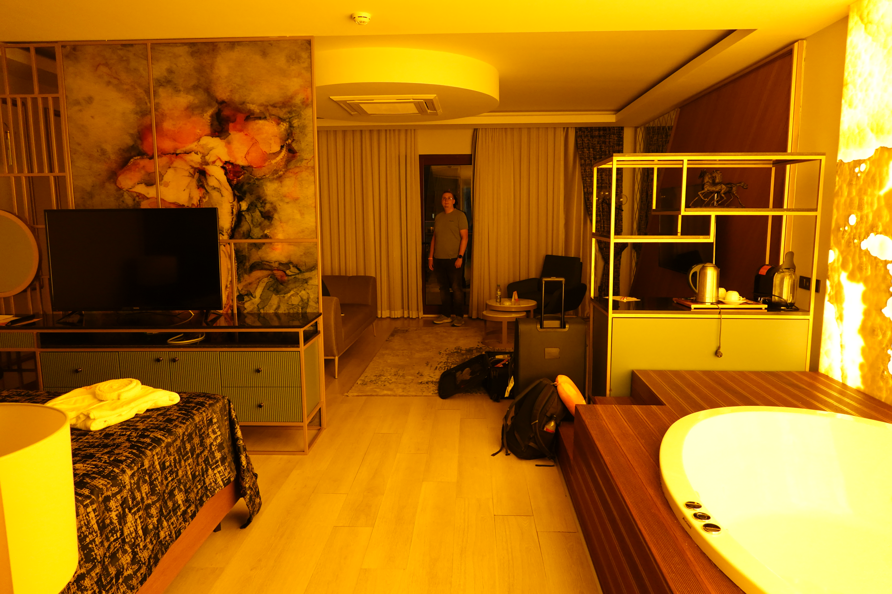
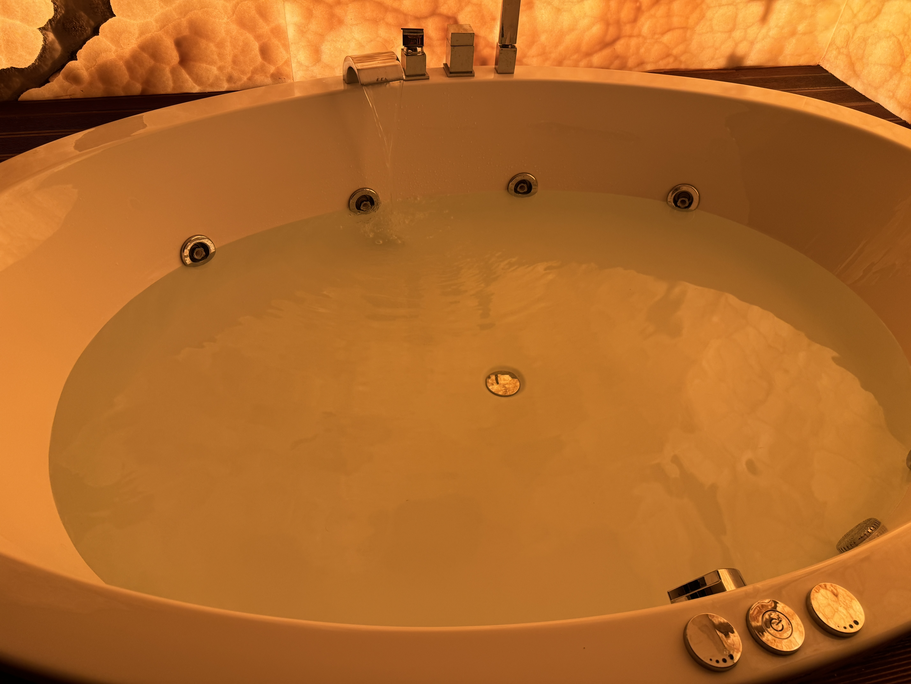

Im August haben wir endlich mal wieder einen All-Inclusive-Urlaub gemacht. Wir waren in der Türkei, genauer gesagt in Side, genauer gesagt in Evrenseki. Das liegt hier:

Gegen 21.30 Uhr kamen wir sehr erschöpft am Orange Palace Hotel an. Wir wollten noch etwas essen und dann direkt ins Bett gehen. Zumindest war das der Plan bevor uns gesagt wurde, dass das Hotel komplett ausgebucht ist und er uns für eine Nacht in der Suite unterbringt.
Als wir die gesehen haben, wussten wir, dass es noch eine lange erste Nacht werden würde.


Aber erst mal gingen wir noch zum Abendessen (es gab noch ein kleines Buffet), schauten uns eine Abendshow mit Akrobatik an und tranken Cocktails.
Wieder in der Suite konnten wir ja nicht einfach ins Bett gehen. So füllten wir gegen halb 12 den Whirlpool auf. Das dauerte ewig und ich glaube, er war gerade einmal halb voll, als wir es uns darin gemütlich machten.

Weiterer Text nach dem Bild...